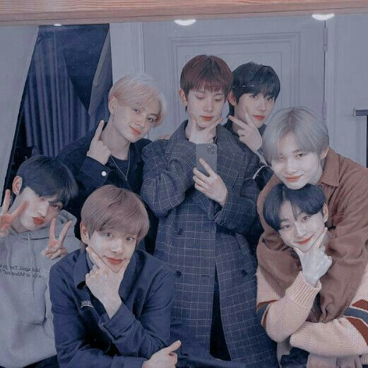

*๑♡՞MEUS HOBBIES!!!⋰˚☆

𓈈 ◦Olá! Meu nome é Julia e eu decidi criar esse site para poder compartilhar um pouco sobre passatempos que eu gosto de fazer e como eu adaptei eles durante a pandemia! ࿓
𓈈 â—¦Como esses meus hobbies não tem a mÃnima necessidade de ser ao ar livre, não foi muito difÃcil pra mim poder adaptar eles durante toda a quarentena desde o ano passado! Mas, vai ser legal falar um pouco sobre eles de qualquer forma. à¿“
∴∵∴ à¨à§ ∴∵∴

— [♡] ;DESENHAR
∴∵∴ à¨à§ ∴∵∴

— [♡] ;DANÇAR
∴∵∴ à¨à§ ∴∵∴

∴∵∴ à¨à§ ∴∵∴

∴∵∴ à¨à§ ∴∵∴
Isso foi um pouquinho das coisas mais
marcantes que eu venho fazendo durante a quarentena!
Com certeza há muitos outros hobbies como
cozinhar, ler, maratonar outras coisas
mas, esses quatro hobbies são coisas marcantes
na minha personalidade que aos poucos eu vou descobrindo!!!
Muito obrigada por ler até aqui, e até mais!
Por fim, eu acho que seria legal como uma forma de se despedir da minha página, clicando aqui
♫GOODBYE꒷꒦